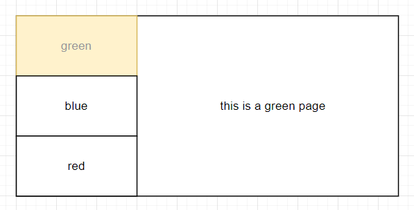
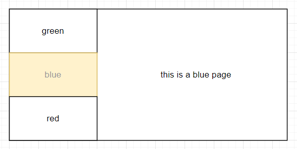

History API 与单页应用
·
Yin灏
单页应用，是指 web 应用可以无刷新在不同的页面间切换，并且页面访问记录会被浏览器保存，从而支持浏览器的前进、后退和刷新等操作。
 本实例将使用 History API 实现一个单页应用，页面访问路径为 “/green”，当使用路径 “/green” 来访问页面时，页面展示效果为 “green” 菜单项被选中，并且右边内容区域显示文字 “this is a green page”。
注意： 单击不同菜单选项进行页面切换时，浏览器不会重新加载页面。
<div class="wrapper">
<ul class="navigator">
<li class="nav-item">green</li>
<li class="nav-item">blue</li>
<li class="nav-item">red</li>
</ul>
<div class="content"></div>
</div>
var menu = $("ul.navigator > li");
var content = $("div.content");
function initPage(page) {
menu.removeClass("selected-item");
menu
.filter(function () {
return $(this).text().toLowerCase().trim() === page;
})
.addClass("selected-item");
content.text("this is a " + page + " page");
}
// 根据当前 URL 初始化页面
initPage(location.pathname.substring(1));
menu.on("click", function () {
var page = $(this).text().toLowerCase().trim();
initPage(page);
history.pushState("", page, page); // 修改 URL
});
// 监听 URL 的变化
window.addEventListener("popstate", function (e) {
// 根据当前 URL 初始化页面
initPage(location.pathname.substring(1));
});